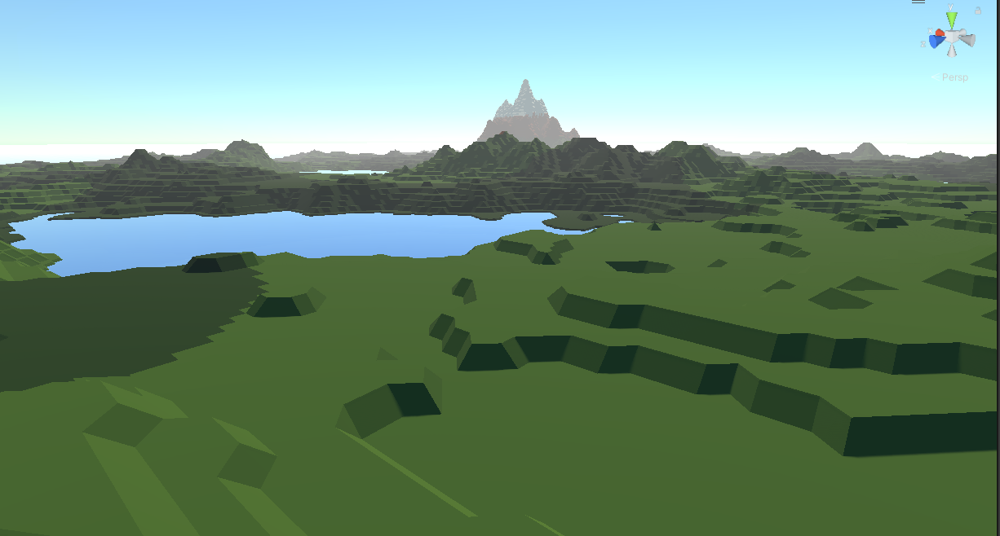

Prémices
J'ai débuté en codant un algorithme de heightmap, qui transforme une texture en un maillage en 3 dimensions.
Dans ces textures, le blanc correspond aux points les plus hauts et le noir aux points les plus bas.
Par la suite, j'ai étendu cette méthode en utilisant un algorithme de Perlin Noise pour générer cette heightmap.
Enfin, j'ai mis en œuvre la création de multiples "chunks" (petits fragments de la carte), facilitant ainsi la génération de vastes cartes de manière efficace.

Expérimentation
J'ai exploré un système de maillage plus novateur en utilisant l'algorithme "marching cube", permettant la génération de grottes et de cavernes.
Cela a donné un effet de "marches", moins réaliste mais plus innovant.
Par la suite, j'ai expérimenté la technique de "smoothing" pour éliminer ces marches, mais le résultat était moins intéressant
car il était plus conventionnel et couramment utilisé dans les jeux.

Couleurs
Par la suite, j'ai intégré un algorithme permettant de changer le matériau du maillage à des emplacements définis de manière procédurale par l'algorithme.
Par exemple, le sol est vert, avec des variations plus sombres à certains endroits, et en haut des montagnes, une couleur blanche est appliquée.
Ensuite, j'ai remplacé ces couleurs par des textures pour obtenir un rendu plus réaliste.

Île
En utilisant un masque approprié sur la heightmap, il est possible de générer une île de la taille souhaitée, comme illustré dans l'image.
Ce masque détermine les zones où la hauteur est ajustée pour créer les contours de l'île, permettant ainsi de contrôler précisément sa forme et sa taille.
En modifiant le masque, on peut aussi rajouter des rivières manuellement ou des montagnes si on veut un plus grand contrôle sur l'île créé.
Futur
Je souhaite améliorer l'algorithme de génération en ajoutant davantage de biomes pour influencer la génération du monde, tels que des déserts ou des plaines, ainsi que l'ajout de végétation et de rivières.
De plus, je souhaite expérimenter l'utilisation de plusieurs cœurs de processeur pour accélérer considérablement la génération du monde sans compromettre la stabilité, permettant ainsi une génération en temps réel alors que le joueur explore, rendant ainsi le monde infini.
Ensuite, je prévois d'explorer la technique de la "wave function collapse", offrant des résultats différents de l'algorithme de bruit utilisé précédemment, ce qui me permettra de générer des villes entières de manière procédurale.
Cet image provient de nxgmn